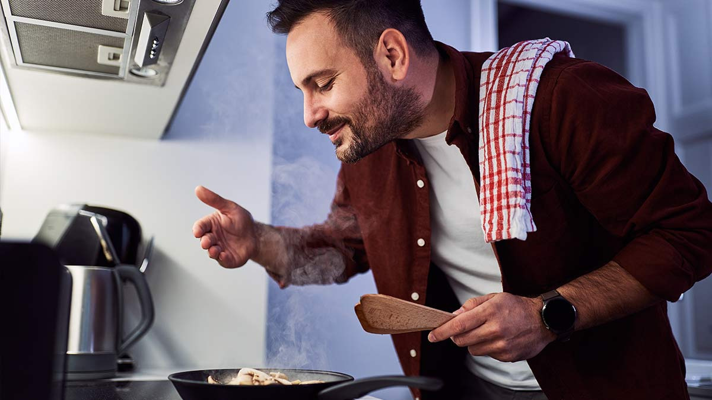

Que comemos?
Es un recetario online dinámico pensado para sacarte del apuro cuando no sabés qué cocinar. En lugar de buscar recetas interminablemente, solo indicás qué ingredientes tenés a mano y la plataforma te sugiere platos que realmente podés preparar. La idea es simple: aprovechar al máximo lo que ya tenés en tu cocina, evitar desperdicios y descubrir nuevas combinaciones sin complicarte. Cada receta está explicada de forma clara, accesible y adaptable a tus gustos o necesidades. Además de sugerirte preparaciones, ¿Qué Comemos? te permite filtrar por tipo de dieta y explorar nuevas ideas según tus preferencias. Todo está organizado para que cocinar sea más fácil, práctico y hasta divertido. Ya sea que tengas poco tiempo, pocos ingredientes o poca inspiración, este recetario funciona como tu asistente culinario diario. Solo elegí, prepará y disfrutá. ¡Cocinar nunca fue tan sencillo!
